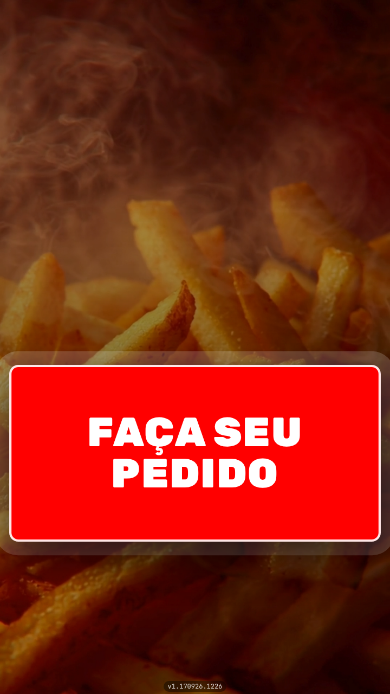

<!-- CTA de peca de funcao nao e caminho de menu: quem le pode nao ter painel
     nenhum, e "abra Aplicativos" nao serve de pedido para quem esta escolhendo
     sistema. O endereco e a pagina do totem no site.

     O texto levou duas tentativas erradas antes desta, e as duas erraram para
     o mesmo lado — o de querer ser esperto no slide que menos pede isso.

     A primeira foi "Conheca o totem por dentro": "por dentro" sugere hardware,
     e o que existe la dentro sao as telas que o leitor acabou de ver.

     A segunda foi "Passe pelo pedido inteiro, tela por tela", que descrevia a
     demonstracao que a pagina roda, com pausa e setas. O fato e verdadeiro, e
     o slide ficou pior: de dentro do feed, ninguem sabe que existe um player
     do outro lado, e a frase virou instrucao para uma coisa que o leitor nao
     viu. CTA que precisa de contexto nao e CTA.

     O que ficou e a convencao, e ela funciona porque o leitor ja sabe o que
     fazer com ela: "Conheca todas as funcionalidades", e o endereco. A pagina
     tem uma secao inteira de plataforma — PDV, KDS, fiscal, financeiro,
     estoque, fidelidade — entao a frase e verdadeira e generosa: promete mais
     do que o carrossel mostrou, que e a unica razao de sair do feed.

     A peca continua nao dizendo como se poe um totem na loja — se e
     equipamento comprado, alugado ou aparelho do lojista. Isso nao esta em
     nenhum manual nem em nenhuma tela, e prometer errado no ultimo slide e o
     pior lugar para errar.

     Nenhum "agora" e nenhum "acabou de sair": o totem nao e novidade, e a peca
     vai ser republicada.

     O aparelho volta, e agora com a TELA DE ESPERA: a capa mostra o cardapio,
     porque la a tela precisa dizer "aqui se compra", e o fecho mostra o
     aparelho parado, esperando o proximo cliente. Repetir a mesma tela nas
     duas pontas seria repetir a imagem, nao fechar o arco.

     Com o titulo curto, o texto cabe em tres linhas e o aparelho sobe: o
     `top` da sangria volta de 490 para 430, e o mockup cresce de 400 para 430
     px de largura.

     A imagem e a captura INTEIRA de 720p, e nao um recorte: a moldura do totem
     e 9/16 e o `object-fit: cover` recorta o que nao tem essa proporcao. -->
<div class="slide slide--capa">
  <div class="topo">
    <span class="logo"></span>
    <span class="contador">9 de 9</span>
  </div>

  <div class="pilha g24" style="margin-top: 40px; max-width: 900px">
    <span class="chapeu">Totem</span>
    <h2 class="titulo titulo--pequeno">
      Conheça todas as <span class="destaque">funcionalidades</span>
    </h2>
    <p class="subtitulo">
      <b>beefood.com.br/totem-de-autoatendimento</b>
    </p>
  </div>

  <div class="sangria" style="top: 430px; right: auto; left: 50%;
                              transform: translateX(-50%)">
    <div class="totem" style="width: 430px; --coluna: 200px">
      <div class="totem__tela">
        
      </div>
      <div class="totem__painel">
        <div class="totem__leitor"></div>
        <div class="totem__impressora"></div>
        <div class="totem__pinpad">
          <div class="totem__tecla"><span></span><span></span><span></span></div>
          <div class="totem__tecla"><span></span><span></span><span></span></div>
          <div class="totem__tecla"><span></span><span></span><span></span></div>
        </div>
      </div>
      <div class="totem__coluna"></div>
      <div class="totem__base"></div>
    </div>
  </div>
</div>
